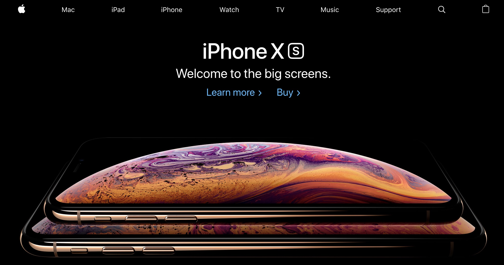

Project 1 : To Do List

The To-Do List Website is a web application designed to help users manage their daily tasks efficiently. This project demonstrates my ability to develop functional, user-friendly web applications using HTML, CSS, and JavaScript. The goal was to create a simple yet effective tool that allows users to add, edit, and delete tasks, ensuring they stay organized and productive.
Technologies Used
HTML5: Structured the content with semantic HTML elements for better accessibility and SEO.
CSS3: Styled the website with modern CSS techniques, including Flexbox and Grid for layout, and media queries for responsiveness.
JavaScript: Added interactivity and dynamic content using vanilla JavaScript.
Git: Managed version control and collaborated with other developers using Git.
Project 2 : Apple Website Clone

The Apple Website Clone is a front-end project where I recreated the visual and interactive aspects of the official Apple website. This project showcases my ability to replicate complex layouts, design elements, and functionality using HTML, CSS, and JavaScript. The aim was to build a pixel-perfect clone that mirrors the user experience of Apple's sleek and modern web design.
Technologies Used
HTML5: Structured the content with semantic HTML elements for better accessibility and SEO.
CSS3: Styled the website with modern CSS techniques, including Flexbox and Grid for layout, and media queries for responsiveness.
JavaScript: Added interactivity and dynamic content using vanilla JavaScript.
Git: Managed version control and collaborated with other developers using Git.